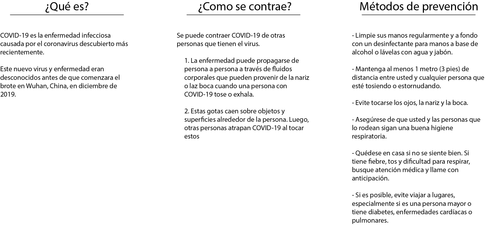

Propuesta de proyecto con temática en el covid-19.
Trabajo en conjunto con Ignacio Saavedra.
Diseño de wearables para sobrevivir en escenarios perjudiciales para la salud.

fdgfdhgfzj rfdgfdghzdf hf
a. Investigación
Elaborar una investigación del tema escogido, tratando de sintetizar la información y publicar la información más relevante, que les permitirá orientar el punto de vista de la problemática. Deben ser sintéticos en el post y sumar artículos o referencias mediante link a los sitios web donde van encontrando la información.
b. Linea de tiempo y mapa de actores
Las problemáticas sobre la movilidad en general son dinámicas en el tiempo, para poder entender estas relaciones temporales deben elaborar una linea de tiempo gráfica que contenga la relaciones que se establecen en el tiempo identificando en que aspectos podemos aportar valor con nuestra propuesta, o dónde identifican las brechas que el proyecto podría resolver. Además es importante establecer un mapa de actores preliminar, en el que declaren que otros actores formarán parte del ecosistema en el que plantearán sus propuestas de diseño.
c. Primeras propuestas de diseño
Utilizando alguna de las técnicas de representación visual que más les acomode, debemos empezar a pre-figurar cómo podría ser la propuesta del objeto o elemento que van a desarrollar. Es una etapa preliminar de propuesta, por lo que deberían presentar alternativas de cómo podrían abordar el tema de estudio de diversos modos materiales.